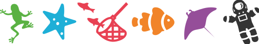

#museumgroupie
BACHELOR THESIS
As our bachelor thesis we implemented an iOS application created
for children at the museum Universeum in Gothenburg.
The application enabled the children to experience the museum
through collaborative photography missions.
As the design leader in the group, my main responsibilities were
to develop several prototypes, which after testing and evaluation
resulted in the final design which was implemented. This included
doing user experience research, listing requirements and
finalizing a user interface including illustrations with Adobe
Illustrator.

Room booking system
COURSE - GRAPHICAL INTERFACES
Our first individual school project where we were to design a room booking system for a university. I interviewed teachers and students to know what they usually do in a room booking system, and what they believe that the current systems are lacking. I set up a few requirements as a foundation for the functionality, and thereafter created my designs by using Figma.
RememberMe
COURSE - DESIGNING USER EXPERIENCES
As a design project for school we were to design something that would evoke a distinct emotion. I used critical design to create a website with the purpose to evoke discussion regarding euthanasia and a person’s right to die. This is the project that has meant the most to me on a personal level because it made me think, and reflect on life.

GO:Explore
COURSE - DESIGNING USER EXPERIENCES
As a school project we were to explore spatial and temporal aspects of design in order to create an experience. We created GO:Explore which is a mobile application trackings people everyday movement with the purpose to encourage a more active and environmentally friendly lifestyle. When people are walking or biking to work in real life, they are walking towards a preset goal in the application - perhaps Paris? The users get notifications when passing famous monuments and buildings.
Make Impact
#METOO-HACK 2018
At the #metoo-hack in Gothenburg, 2018, we created a tool with tips and suggestions of what to do or say in situations where sexual harrasment can occur. The tool was an Android application.